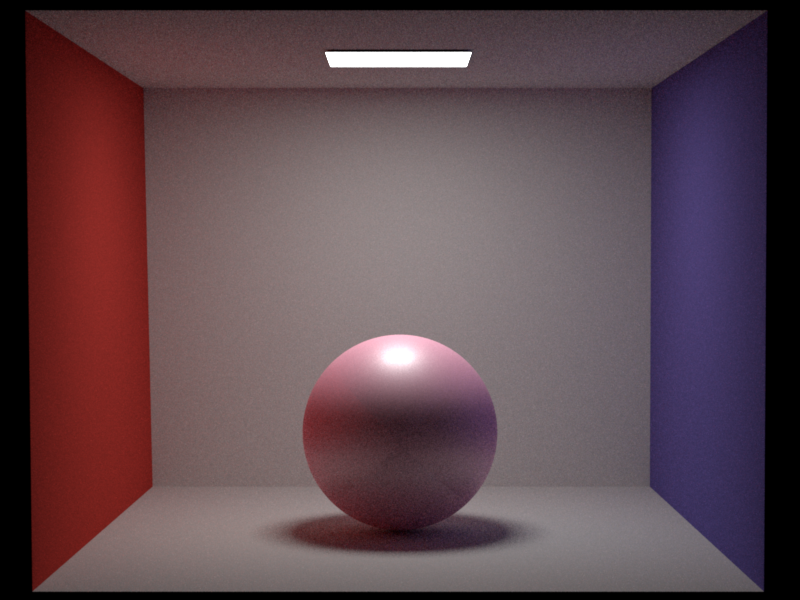
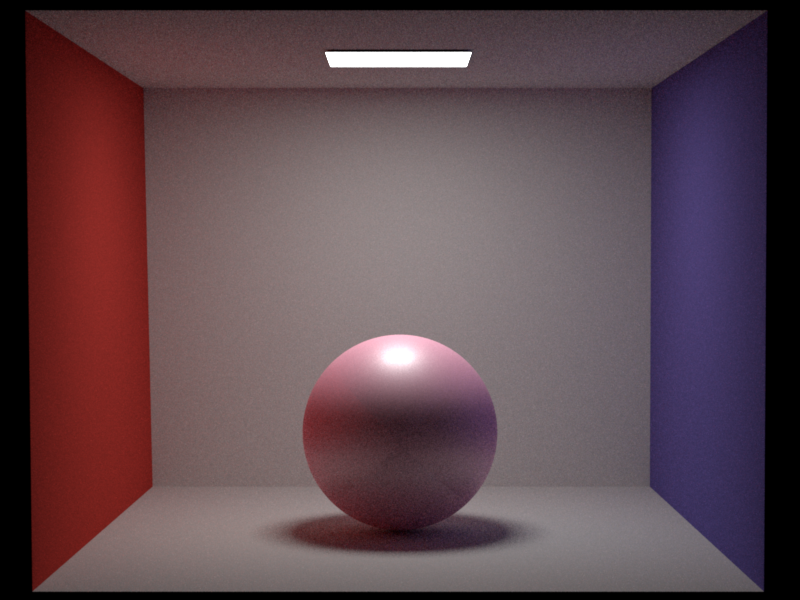

Student number:
Orhun Görkem: 22-945-216
Yuqing Huang: 22-937-387
Section 1: Motivational Image
Motivation
With the motivational image above, we aimed to challenge ourselves by rendering a wide outdoor environment with small details and heterogeneous volumes for light to be traced in. We believe that the image is suitable for this year's theme: Out of place. There are rocks with complex textures floating in the sky. A small neighborhood that consists of some trees, fences, a bridge, and a house is situated on the rocks, which is well out of place!
One of the reasons for picking this image was the underlying meaning of it. The interpretation might be different for everyone, but for us the image symbolizes a comfort zone that is independent of anywhere. Just like the hourse on the floating island that can view the world from a wide angle, human mind can establish its ideas from a wide range of points of view to adapt to different cases and circumstances. Even when you are physically out of place, when your mind belongs to everywhere, there is no place you are out of. The image also represents the juxtaposition of independence and interconnection. The two floating islands are distant from everything else but are connected with each other, which gives the scene a rich and mysterious ambience.
The other reason was of course the possibility of representing various interesting features on the image. When necessary, we may modify the image a bit to incorporate some features we would like to implement. The relevant features and their distributions are going to be explained in the next section.
Acknowledgements
Our motivational image is obtained from the following website: Wallpaper Flare.
Section 2: Implementation and Validation of Graded Features (Yuqing Huang)
Images as textures (5)
Using texture mapping, we will be able to map desired 2D textures onto 3D objects in the scene.
I created a class called ImageTexture that inherits from the base class Texture<Color3f>.
In the class constructor, an input png image is read in and the information is stored.
I used an external library loadePNG as a PNG image decoder.
Then in the eval function of ImageTexture, I find the correponding position \((d_i, d_j)\) in image file for point \((u, v)\) and finally use bilinear interpolation to return the desired color.
The files added or modified that are relevant to this feature are:
src/imgtexture.cppsrc/lodepng.cppinclude/nori/lodepng.h
For validation, I created two test scenes. I download the object and texture files from Turbosquid (3D Models).
The first one contains a globe with an image of flags mapping onto it. The texture image and the comparison test scene (with and without texture mapping) are shown below.
Globe Texture File

Globe Test Scene (With and Without Image Texture)
The second scene contains a cabin object, with wooden texture mapping onto it. The texture image and the comparison test scene (with and without texture mapping) are shown below.
Wooden Cabin Texture File

Wooden Cabin Test Scene (With and Without Image Texture)
Normal mapping (5)
Normal mapping can be used to depict rough textures of 3D objects.
I created a class called NormalMap that inherits from the base class Texture<Vector3f>.
In the class constructor, an input png image is read in and the information is stored.
I used an external library loadePNG as a PNG image decoder.
Then in the eval function of NormalMap, I find the correponding position \((d_i, d_j)\) in image file for point \((u, v)\) and use bilinear interpolation to interpolate the color.
In addition, since each color component is in the range \([0, 1]\) and we want an XYZ vector with each component in the range \([-1, 1]\), a simple mapping is performed using the formula normal = (2 * color) - 1.
In order to attach the normal map to object, I added a field m_normalMap besides m_albedo and a hasNormalMap function to indicate whether a normal map is defined or not.
Finally, in Mesh::setHitInformation, if a normal map exists, the originally calculated normal is perturbed using the normal map.
The files added or modified that are relevant to this feature are:
src/normalmap.cppsrc/mesh.cppsrc/sphere.cppinclude/nori/bsdf.hsrc/diffuse.cppsrc/lodepng.cppinclude/nori/lodepng.h
For validation, I created two test scenes. I download the objects and normal maps from Turbosquid (3D Models).
The first one contains a globe with brick-looking normal map. The normal map and the comparison test scene (with and without normal mapping) are shown below.
Brick Normal Map File

Globe Test Scene (With and Without Normal Mapping)
The second scene contains a cabin object, with pre-defined normal map onto it. The normal map and the comparison test scene (with and without normal mapping) are shown below.
Wooden Cabin Normal Map File

Wooden Cabin Test Scene (With and Without Normal Mapping)
Depth of field (5)
Depth-of-field feature makes part of the scene in-focus and the rest out-of-focus, which is helpful to make emphasis on certain object.
In order to add the depth-of-field feature for the perspective camera, I added the fields m_radius and m_focalLength for PerspectiveCamera.
Then in the function PerspectiveCamera::sampleRay, I cast rays from across the lens rather than from a single point. This is done by shifting ray origin on the lens with certain radius and recalculate the ray direction.
The new direction of the ray is calculated using the formula dir = (focalPoint - new_origin).normalized(), where focalPoint is on the focal plane.
The files added or modified that are relevant to this feature are:
src/perspective.cpp
For validation, I created a test scene using the Cornell Box Scene. I first used a camera with radius 0.3 and focal length 5 so that the front glass sphere is in-focus while the back one is out-of-focus. I then used a camera with radius 0.3 and focal length 4.5 so that the front and the back glass sphere are both out-of-focus.
Cornell Box Test Scene (With and Without Depth-of-field)
Modeling meshes (5)
For this part, I used Blender to create 3D object model. Since there is a house in our motivational image, I decided to model a house by myself in Blender. With the help of the tutorial Blender Tutorial (Modelling House), I created a scene with a house consisting of cube meshes and added four light sources. Finally, I used BlenderNoriPlugin to export blender scene to Nori xml format. No source code in nori was modified for this part. However, I used the following tools and external Plugin to implement this feature:
For validation, My sample scene with a house illuminated by four light sources is shown below.
House Scene
Motion blur (10)
Motion blur helps to depict movement of objects in a static-looking image.
To implement this feature, I decided to add a field with type Vector3f named m_velocity in the class Mesh, to store the per frame displacement of the mesh.
The velocity information is read-in inside the WavefrontOBJ constructor.
In BVH::rayIntersect, I generate a random number \(s\) between 0 and 1 and pass that information to each (triangle) mesh.
Then in Mesh::rayIntersect function, when we test intersection between ray and triangle defined by \((p_0, p_1, p_2)\),
I use the random number \(s\) to interpolate the current position of the triangle to be \((p'_0, p'_1, p'_2)\), where \(p'_i=p_i+s\times v\), \(v\) is the user-defined per frame velocity.
Therefore, the changing position of object between frames is being considered.
Simlarly, for the class Sphere, I added a field with type Vector3f named m_velocity.
And then in the function Sphere::rayIntersect, only the position for the center of the sphere needs to be interpolated.
I also adjusted the bounding boxes for objects according to their velocities so that the correct rays will be included.
The files added or modified that are relevant to this feature are:
src/mesh.cppsrc/shape.cppsrc/bvh.cppsrc/sphere.cppsrc/obj.cppinclude/nori/mesh.hinclude/nori/sphere.h
For validation, I created two test scenes..
The first test scene is based on the Cornell Box Scene. The left sphere is in motion with an upward velocity of 0.2, while the right sphere is still.
Cornell Box Test Scene (With and without motion blur)
The second test scene is based on the table scene from previous assignment. The left object is in motion with velocity defined by (2, 1.5, 0) and the glass on the right is still.
Table Test Scene (With and without motion blur)
A potential improvement based on my implementation of motion blur is that instead of linearly interpolate the position of object between frames, it is possible to define both velocity and acceleration of object. And then using the formula \(x'=x+v\Delta t+\frac{1}{2}a\Delta t^2\) to interpolate the position of object between frames. In this way, we can better depict the movement of a falling object, for example. Note that in my implementation, velocity and acceleration are defined per frame rather than per second. Therefore, \(\Delta t\) is between 0 and 1.
Heterogeneous volumetric participating media (30)
In order to define mediums, I created a Medium class which stores sigma_a, sigma_s, phasefunction for the medium.
Then I calculate signa_t, albedo of the medium.
Function Medium::Tr for homogeneous participating medium computes the transmittance using the closed-form formula.
Function Medium::Tr for heterogeneous participating medium estimates the transmittance by performing ratio tracking.
Function Medium::sample runs delta-tracking iterations to sample a medium interaction.
In addition, there is a density function Medium::Density which retrieves the density of medium at a certain position, depending on what density method we use.
I implemented three density methods, the first one returns a uniform density which corresponds to homogeneous participating media.
The second one implements an exponential density box, where the density varies based on an exponential function depending on different y positions.
The third one implements an exponential density sphere, where the density varies based on an exponential function depending on distance to the sphere center.
For the phase functions, I implemented a class PhaseFunction inherits from the base class NoriObject.
I implemented both the isotropic phase function and the Henyey-Greenstein phase function.
Finally for the volumetric path tracing integrator, I created a new integrator named PathVol.
In the function PathVol::Li, each time in the loop we intersect the ray with the scene and then sample the participating medium if present.
Depending on whether there is a volume interaction or not, we have an interaction with a medium or with a surface.
As usual, we possibly terimate the path with Russian roulette.
The files added or modified that are relevant to this feature are:
src/path_vol.cppsrc/medium.cppsrc/phasefunction.cppsrc/scene.cppinclude/nori/medium.hinclude/nori/phasefunction.hinclude/nori/scene.hinclude/nori/common.h
For validation, I created three test scenes, one with homogeneous volume, one with cubic exponential density volume, and one with spherical exponential density volume. All three scenes are based on the Cornell Box Scene.
For the first test, I compare homogeneous medium with density 1 and density 2. The generated images are shown below.
Note that since I defined positive sigma_a and sigma_t values for the medium, the higher density medium appears brighter as there are more particles absording the light.
Cornell Box Test Scene 1 (Homogeneous, different density value)
For the second test, I compare exponential density box with homogeneous density box. The generated images are shown below.
Cornell Box Test Scene 2 (Exponential box vs. homogeneous box)
For the third test, I compare exponential density sphere with homogeneous density sphere. The generated images are shown below.
Cornell Box Test Scene 3 (Exponential sphere vs. homogeneous sphere)
There are many other ways to compute the density of medium. One way is to read in density grid information from existing datasets online and store in a Grid structure.
For each position, interpolate the density.
Another way is to procedurally compute density. The expontial function that I implemented is one of the simplest way to generate density.
However, to create complex heterogeneous mediums, such as clouds, much more complex functions as well as noise functions are needed.
Acknowledgements
I consulted the following resources while implementing my features:
- Graphics Programming - Textures
- OpenGL Normal Mapping
- Wikipedia Normal Mapping
- Depth of Field in Path Tracing
- NVIDIA - Depth of Field
- Blender Tutorial (Modelling House)
- Implementation of Motion Blur
- Physically Based Rendering: From Theory To Implementation (Matt Pharr, Wenzel Jakob, Greg Humphreys)
- Volume and Participating Media
Section 3: Implementation and Validation of Graded Features (Orhun Görkem)
Simple extra emitters (5) - Orhun Görkem
Time spent: 4 hours
Source file: spotlight.cpp
Position:For the source of emissionPower:For radianceFalloff:The angle that determines the boundary of spherical cap after which the power of light coming out starts to decreaseTotal width:The angle that determines the boundary of spherical cap of emissionDirection:Direction of the emission
The cosine values of falloff and total width are immediately calculated to be used in sampling the light source.
eval, sample, and pdf functions are implemented as in all of the emitters. The eval and pdf functions were straightforward. In eval, I returned the given power of spotlight. The falloff is calculated in the sample function. In pdf, if the cosine between emitter normal and hitpoint is smaller than cosine of total width, 0 is returned. Otherwise, 1 returned.
In sample, EmitterQueryRecord is filled with necessary information about hitpoint. The shadow ray is calculated with surface reference and direction to the emitter. If the hitpoint is in the range of spotlight, the falloff ratio is calculated. I applied the following code with the information based of PBR:
auto delta = (cos - m_cos_total) / (m_cos_falloff - m_cos_total);
falloff = (delta * delta) * (delta * delta);
Total power is also calculated with the formulation from PBR:
auto I = m_power / (2*M_PI*(1.f - 0.5f * (m_cos_falloff + m_cos_total))); Function returns:
return I * falloff / (m_pos - lRec.ref).squaredNorm(); Final gather of photon mapping (5) - Orhun Görkem
Time spent: 8 hours
Source file: finalgather.cpp
I did my implementation to finalgather.cpp instead of updating photonmapper.cpp to keep the first implementation. This integrator takes a parameter called gather in addition to photonCount and and photonRadius to determine the number of times the ray is reflected after encountering a diffuse surface. The original photon mapping works as follows:
- Preprocessing: Simulating the emission of photons and keeping the hitpoints in a photon map.
- Sampling: Applying path tracing to collect the illumination in hitpoints by radience estimation in sampled hitpoints.
- Tracing goes on until a diffuse surface appears or russian roulette terminates.
return Li + estimateRadiance(scene, sampler, its, wi, t) + t * (photon_density / (M_PI * m_photonRadius * m_photonRadius * m_photonCount)); The estimateRadiance function gets the scene, sampler, intersection, incident ray, and t(weight) as parameters. In a for loop, it samples a new outgoing ray and brdf. If the outgoing ray intersects with a surface in the scene again, classical radience estimation is applied one more time in the new intersection. Photon densities are accumulated through the for loops and the average is returned. The number of iterations in for loop depends on the gather parameter, which we give in the scene xml. Increasing gather reduces time efficiency, but results in higher quality rendering. Nevertheless, I did not see a significant improvement in the rendering with these updates.

Environment map emitter (15) - Orhun Görkem
Time spent: Around 35 hours
Source file: envmap.cpp
Environment map emitter can be seen as an infinitely large emitter that surrounds the scene spherically from a long distance. The source of emission is passed with an exr image as a parameter. So if we want to inject a prebuilt background to the scene and illuminate the scene with that background, an environment map emitter is very useful. XML gets the exr file, radius of sphere, and center of sphere as parameters. Radius should be set sufficiently large to make the scene negligibly small when compared to the emitter. I used radius 50 since it is a very large measure when compared to the metrics of the scene. So all the parts of the environment map illuminates the scene with negligibly small incident angles with the surface normals, which makes it a good approximation for outdoor lighting.
Precomputation
env_mapping = Bitmap(props.getString("filename")); The line above reads the exr image and maps it to a Bitmap, which can be seen as a matrix filled with pixel colors. First thing to do is to produce an intensity map from those values. The importance of the intensity map is that we will sample the light with importance to the intensities. Less intensive pixels illuminate the scene negligibly, which makes the rendering less efficient. Intensity map is produced with getIntensityMap function. Function iterates through the pixel colors and applies the following formulation to get intensity:
intensities[i][j] = sqrt(color.r() * color.r() + color.g() * color.g() + color.b() * color.b()); Since the environment map is formed with spherical projection, it is prone to distortions. With the suggestions from PBR and the paper (Monte Carlo Rendering with Natural Illumination), I multiplied the intensities with the sine of row number / total number of rows to overcome distortion.
For importance sampling by intensities (which are kept in a 2d vector now), the pdf and cdf of the intensities are calculated since I used the inversion method for sampling. To manage that, I established 1d distribution of rows (pu = pdf, Pu = cdf) and conditional 2d distribution (pv = pdf, Pv = cdf). Then I called preCompute2d function to fill the pdfs and cdfs. It gets the following inputs with given sizes:
- f: intensity matrix (n,m)
- pu (n)
- Pu (n+1)
- pv (n,m)
- Pv (n,m+1)
For each row in pv and Pv, preCompute1d is called to fill the pdf and cdfs. preCompute1d is straightforward: The sum of intensities is calculated, than index/sum values are put in pv[i] and cumulative distribution is accumulated for Pv[i]. Same procedure is applied for pu and Pu too, to get the distributions among rows. In short, we calculated the distributions in each row and among the rows.
sample2d and sample1d functions make use of these precomputations. sample2d function samples a point in 2d matrix with respect to the intensities. To do that, it samples a row with sample1d function, and samples an index in the selected row with sample1d function again. p(u,v) = p(u) * p(u|v)
sample1d function uses the inversion method by iterating through the cdf and when the cdf exceeds the given canonical random variable, it returns the sample at that point.
Eval, Pdf, Sample
Eval evaluates the emitter. It gets a incident direction. We need to map this direction to the environment lighting. Since environment map is a sphere, I converted the incident direction wi to spherical coordinates. Then I obtained the indices u, v by applying proportion to the spherical coordinates. For each u,v sample, I obtained the surrounding four pixels. I averaged the r, g, b values of the four pixels and returned the color.
Pdf should return the probability of selecting the sampled pixel. So I used the same steps to map the incident direction to the sampled pixel.
Since we already precomputed the pdfs, I just returned the multiplication of p(selecting row x) and p(selecting column y given that row x is selected).
return pv[x][y] * pu[x];
Sample function samples 2d point using the sample2d function explained above. This function also returns the probability of the sample. This probability is not accurate when we work with spherical coordinates, so I calculated the Jacobian for the transformation and also obtained the spherical coordinates from samples. I calculated the incident direction from spherical coordinates and assigned it to EmitterQueryRecord. The rest is usual part as in all of the emitters.


Disney BSDF (15) - Orhun Görkem
Time spent: 40 hours
Source file: disney.cpp
Updated file: warp.cpp
I implemented the following parameters: Sheen, Specular, Roughness, Clearcoat, Clearcoatgloss. (Graded) I also made use of metallic parameter to make the reflections more realistic as sometimes diffuse reflections were necessary and parametrizing it was not hard. I used the original paper of Disney BRDF and the original implementation from Walt Disney Studios. However, this was not sufficient since the details about sampling and pdf were not that clear. I found 2 blogs to fill the missing parts in my mind. Maybe it is because I did not implement all the parameters, but I cannot say that my implementation is a total success. I sometimes sample noisy dots in extreme parameters and have a line on the radius of the sphere in validation scenes. Nonetheless, my implementation results in some artistic images and the changes of the parameters are visible.
Sheen
Most of the parameters bring an evaluation coefficient to the eval function. To calculate that coefficient, I implemented evalSheen function. The function gets the Schlick Fresnel (FH) parameter as input. This parameter is defined in the paper in appendices and included in the original implementation. I also gave the luminance as input, which is a linear combination of the base color of the surface. I calculated the tint color by dividing the base color with the luminance. Then I linearly interpolated the tint with white with sheenTint parameter. I returned the multiplication of sheen, FH, and interpolated term. I divided the result by 2. This was a very empirical adjustment. I thought the coefficient from sheen was extra effective in the final image, and wanted to reduce the effect.
Clearcoat
I implemented evalClearcoat function. For the clearcoat parameter, I applied the methods from the blogs I referenced. I sampled GTR1, SeparableSmithGGXG1 distributions. Calculated schlick weight and returned the multiplication of these with clearcoat parameter. Note that clearcoatGloss parameter was used to sample GTR1.
Specular
I implemented evalSpecular function. This parameter is usually applied with GTR2 sampling, which makes use of anisotrophy parameter. As I did not implement anisotrophy, I assumed it to be 0, which makes aspect ratio 1. Then I calculated alpha with roughness parameter. I sampled from Smith GGX and GTR 2 distributions. Also color Fs is calculated with the given Schlick weight. Note that the sampling functions I used here are implemented in warp.cpp.
Eval, Pdf, Sample
Eval function gets input and output directions of the ray to compute the normals and pass them to the functions that I mentioned above. It also calculates
luminance and Schlick weight since they are used multiple times for different Disney BRDF parameters. c_sheen, c_clearcoat, and c_specular are obtained and their
sum is returned as the evaluation.
I implemented pdf function with the help of the blog. Yet, it was very similar to the one of microfacet.cpp since Disney BRDF is microfacet based.
There are three possible cases: Diffuse case, metallic case with clearcoat, metallic case without clearcoat.
return (1.0f - m_metallic)*(cosTheta_o / M_PI)
+(m_metallic)*(Ds2 * Gtr2* cosTheta_h * J_h)
+ (1.0 - Gtr2)*(Ds1 * cosTheta_h * J_h);
The term in the first line is for diffuse case, basically divides the cosine by PI. The term in second line is for the case without clearcoat.
The sampled Gtr2 variable determines if the sample shows clearcoat property. The multiplied terms are stated in the paper. J_h is the jacobian term,
which is calculated as the same way in microfacets. The third describes the case with clearcoat, has the sample from GTR1 distribution.
In the sample function, outgoing direction is sampled according to the disney parameters. The coefficient for diffuse case is 1 - metallic parameter.
If sampled canonical random variable is smaller than diffuse coefficient, outgoing direction is sampled with squareToCosineHemisphere function from
Warp class. Else, we analyze the specular case, which can include clearcoat lobe or not. This depends of Gtr2 = 1 / (1 + clearcoat). If sampled
random variable is smaller than Gtr2, there is no clearcoat lobe. We sample from Gtr2 distribution, which I implemented in Warp class. Note that
roughness is also a parameter in this sampling. Also note that we sample wh (half vector between incident and outgoing vectors) in specular cases.
If there is a clearcoat lobe, wh is sampled from Gtr1, with the clearcoatGloss parameter. After sampling wh, outgoing vector wo is obtained as follows:
bRec.wo = (2.0f * wh * (wh.dot(bRec.wi)) - bRec.wi).normalized(); .
Validation
Default image with all parameters 0.5
 



Acknowledgements
I consulted the following resources while implementing my features:
- Physically Based Rendering Book
- Infinite emitter implementation from PBR
- Paper for sampling environment map emitter
- Importance driven environment sampling
- WDAS Disney BRDF implementation
- A blog for Disney BRDF
- Original Paper of Disney BRDF
- Physically Based Rendering: From Theory To Implementation (Matt Pharr, Wenzel Jakob, Greg Humphreys)
- Another blog for Disney BRDF